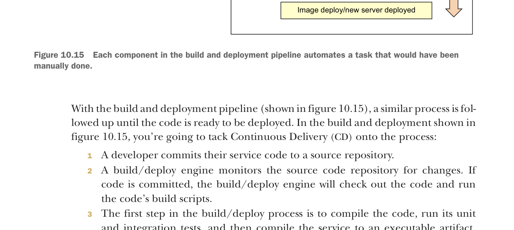

Each component in the build and deployment pipeline automates a task that would have been manually done.
With the build and deployment pipeline (shown in figure 10.15), a similar process is followed up until the code is ready to be deployed. In the build and deployment shown in figure 10.15, you’re going to tack Continuous Delivery (CD) onto the process:
- A developer commits their service code to a source repository.
- A build/deploy engine monitors the source code repository for changes. If code is committed, the build/deploy engine will check out the code and run the code’s build scripts.
- The first step in the build/deploy process is to compile the code, run its unit and integration tests, and then compile the service to an executable artifact. Because your microservices are built using Spring Boot, your build process will create an executable JAR file that contains both the service code and self-contained Tomcat server.